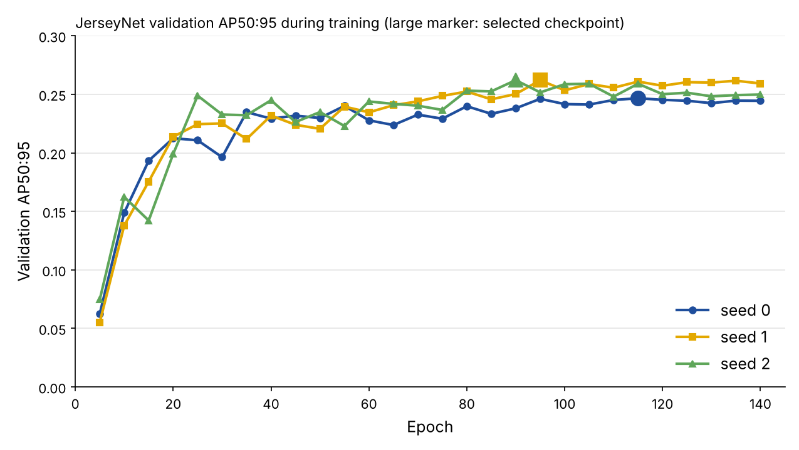
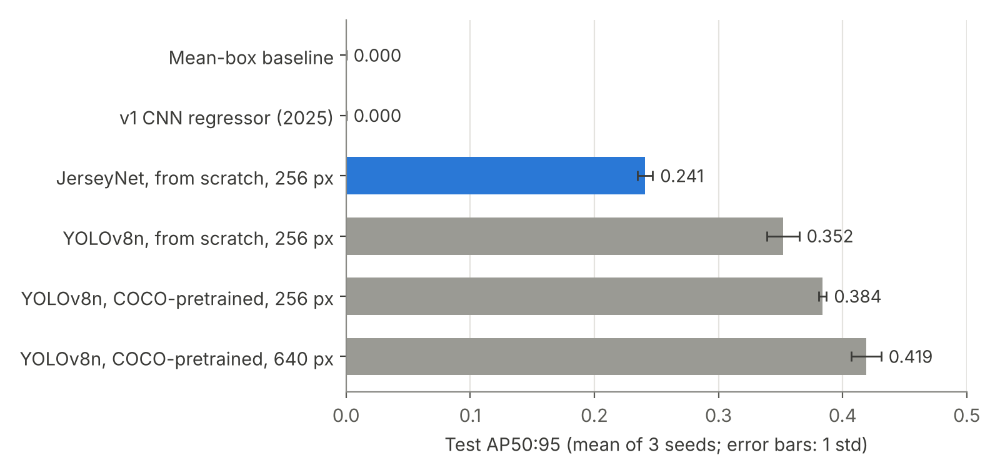

Experiment · Computer vision
My jersey-number detector learned nothing. Its rebuild showed that pretraining was not the gap
I rebuilt a 2025 coursework model as a detector trained from scratch, then measured it against YOLOv8n with and without pretraining. The result surprised me.
By Muzammal Hussain · 1 November 2026 · 6 min read
In 2025 I built a small convolutional network to find jersey numbers in ice-hockey images. It trained, its loss went down, and it produced a box on every image. This week I measured it properly. It was no better than drawing the same box in the same place on every picture. So I rebuilt it, trained the new model from scratch, and compared it with a modern pretrained detector to see where the remaining gap comes from.
Key findings
- The 2025 network scored a mean IoU of 0.051 with the first annotated box on the test images. A constant "average box" scored 0.016. Under standard detection metrics both score zero.
- JerseyNet, a detector I trained from random weights, reached AP50:95 of 0.241 and AP50 of 0.495 over three seeds, with a standard deviation under 0.01.
- YOLOv8n trained from scratch at the same input size reached 0.352. With COCO pretraining it reached 0.384, and at its usual 640 px input 0.419.
- So COCO pretraining added only about 0.03 AP on this task, and a larger input another 0.035. The detector design and training recipe accounted for 0.11.
- The same YOLOv8n run reproduced my earlier result exactly (0.581 first-box IoU), which cross-checks the new evaluation code.
The data
The dataset is a public Roboflow export of ice-hockey images, mostly broadcast frames and press photos, with a box around every visible jersey number. All images are 128 × 128 pixels, and the numbers are small: the median box side is about 10 pixels, and one in ten is under 4.
| Split | Images | Boxes | Most numbers in one image |
|---|---|---|---|
| Train | 3,165 | 4,941 | 9 |
| Validation | 301 | 485 | 6 |
| Test | 147 | 234 | 9 |
Before training I checked for the same picture in more than one split, using a 64-bit image hash. One test image and nine validation images are near-identical to a training image. That is small enough to keep the official splits, so other work can be compared with mine, but I report it.
Why the first model could not work
The 2025 network was three convolution layers, then global average pooling, then four numbers for one box. Global average pooling throws away where in the image each feature was found, and the network could only ever output one box, although training images hold up to nine numbers. On top of that, each image was squashed to 128 pixels, leaving the smallest numbers a few pixels wide. Longer training and a better box loss did not help; I had tried both.
JerseyNet: a detector trained from scratch
JerseyNet follows the CenterNet idea (Zhou et al., 2019): instead of regressing one box, it predicts a heat map with a peak at the centre of every number, plus the width, height and a small offset at each peak. Reading the boxes off is simple: keep the local peaks, no anchor boxes and no non-maximum suppression needed. The network has a residual backbone and a feature pyramid that brings every level back to a quarter of the input resolution, because the numbers are small. It has about 4.7 million parameters and starts from random weights. Each seed trained for 140 epochs in about 22 minutes on one free Kaggle T4 GPU.

How everything was scored
Every model, including the YOLO runs, was scored by the same code on the same 147 test images. The main metric is COCO-style average precision over every annotated box: AP50:95 averages ten overlap thresholds from 0.50 to 0.95, and a box predicted on an image with no number counts as a mistake. My implementation matches the reference pycocotools library to six decimal places in the tests. I also kept the simpler first-box IoU from the old project so the two can be compared, and added 95% bootstrap intervals, because 147 images is not many. Checkpoints were always picked on the validation split; the test split was only used once per trained model.
Results

| Model | Pretrained | Input | AP50:95 | AP50 | Box IoU |
|---|---|---|---|---|---|
| Mean-box baseline | – | – | 0.000 | 0.000 | 0.016 |
| v1 CNN (2025) | no | 128 | 0.000 | 0.000 | 0.051 |
| JerseyNet | no | 256 | 0.241 ± 0.006 | 0.495 ± 0.004 | 0.476 |
| YOLOv8n | no | 256 | 0.352 ± 0.013 | 0.629 ± 0.019 | 0.544 |
| YOLOv8n | COCO | 256 | 0.384 ± 0.003 | 0.675 ± 0.004 | 0.576 |
| YOLOv8n | COCO | 640 | 0.419 ± 0.012 | 0.701 ± 0.008 | 0.590 |
Where the gap comes from
Running YOLOv8n three ways lets the gap be split into parts. Read the table from the bottom up: lowering the input from 640 to 256 pixels costs 0.035 AP. Removing COCO pretraining costs another 0.032. Swapping YOLOv8n's design and training recipe for JerseyNet's, with both trained from scratch at 256 pixels, costs 0.111.
I expected pretraining to be the main reason my model was behind. It was the smallest of the three. A YOLOv8n that had never seen COCO still beat JerseyNet comfortably. The difference is in the detector itself: YOLOv8n predicts at three scales, uses stronger box losses and heavy augmentation such as mosaic, while JerseyNet has one high-resolution head, a simple L1 size loss and light augmentation. Those are now being tested one at a time.
Update: closing part of the gap
After publishing, I tested three parts of a modern recipe on JerseyNet, one at a time: mosaic augmentation (four training images stitched together), a GIoU box loss, and a larger 384-pixel input. Each variant trained once; the one with the best validation score was then trained twice more. The test split played no part in the choice.
| JerseyNet variant | Val AP50:95 | Test AP50:95 |
|---|---|---|
| Baseline, 256 px | 0.259 | 0.235 |
| + GIoU loss | 0.256 | 0.255 |
| + mosaic | 0.288 | 0.273 |
| 384 px input | 0.304 | 0.277 |
| + mosaic + GIoU | 0.293 | 0.258 |
| + mosaic + GIoU, 384 px | 0.337 | 0.303 |
Over three seeds the combined recipe reached 0.308 ± 0.005 AP50:95, up from 0.241: a 28% gain, still with no pretraining. Mosaic and the larger input each helped on their own; the GIoU loss alone did little. Differences between single runs are within their error margins, so only the repeated combined result should be taken as firm. It narrows the gap to the from-scratch YOLOv8n (0.352), though that model ran at 256 pixels, so a matched 384-pixel run is next. Training time per seed rose from 22 to 65 minutes.
What I take from it
- A falling loss is not a working model. Compare against the dumbest possible baseline before anything else.
- Pretraining is not automatically the big win. On this small, narrow task it was worth about 0.03 AP.
- Design and recipe matter most here, which is good news for training from scratch: that part can be improved without anyone else's weights.
- One evaluator for every model, checked against a reference library, is what makes the comparison mean anything.
Limitations
- One dataset, from one sport, with 147 test images. The intervals are wide, and results may not carry over to football or basketball, where kits and camera views differ.
- YOLOv8n used its own default recipe, so the from-scratch comparison is between complete systems, not architectures alone.
- The model finds where a number is; it does not read the digits.
- The images are broadcast and press photos whose rights belong to others; the dataset is used for research only.
Reproduce the experiment
The repository has the full pipeline as a tested Python package, the Kaggle notebooks for JerseyNet and the YOLOv8n baselines, and the complete outputs of every run reported here.
Method: Zhou, Wang and Krähenbühl, "Objects as Points", 2019; Law and Deng, "CornerNet", ECCV 2018. Training from scratch: He, Girshick and Dollár, "Rethinking ImageNet Pre-training", ICCV 2019. Baseline: Ultralytics YOLOv8 (Jocher, Chaurasia and Qiu, 2023). Metric: COCO, Lin et al., ECCV 2014. This is a small engineering experiment, not a peer-reviewed paper.